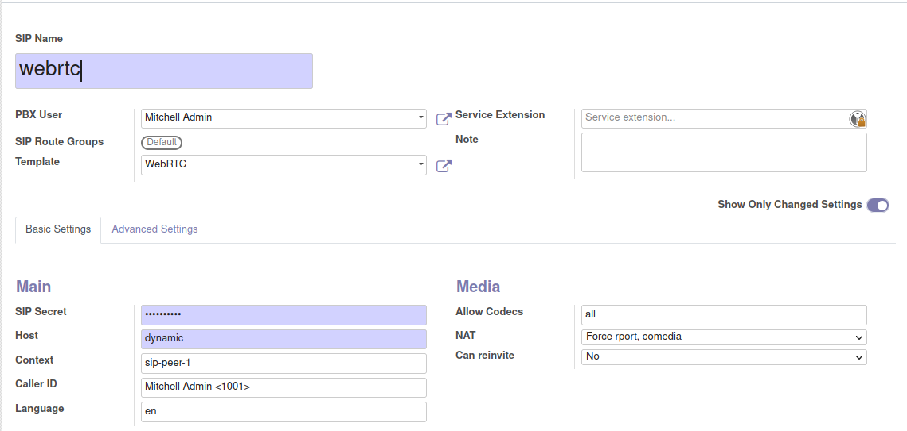

Configure Asterisk to work with Odoo VoIP¶
Asterisk configuration¶
Making WebRTC work with Asterisk¶
Making Asterisk work with WebRTC requires setting up correctly the Asterisk’s included web server.
The server’s configuration is defined in /etc/asterisk/http.conf.
For better security it’s recommended you generate a TLS keypair for Asterisk, or you can also use the keys
provided by LetsEncrypt.
# /etc/asterisk/http.conf
[general]
enabled=yes
enablestatic=no
servername=OdooPBX
bindaddr=127.0.0.1
bindport=8088
tlsenable=yes
tlsbindaddr=0.0.0.0:8089
tlscertfile=/etc/odoopbx/pki/current/fullchain-privkey.pem
Create WebRTC SIP Peers manually¶
Edit /etc/asterisk/sip.conf and add the user’s configuration as shown below.
[webrtc] ; This will be WebRTC client
accountcode=user-2
allow=all
canreinvite=no
cancallforward=yes
context=sip-peer-1
deny=0.0.0.0/0.0.0.0
host=dynamic
language=en
nat=force_rport,comedia
permit=0.0.0.0/0.0.0.0
secret=X1D2PAhwkG
type=friend
disallow=all
allow=g722,alaw,ulaw,vp8,h264,h263p,mpeg4
type=friend
rtcp_mux=yes
transport=wss
host=dynamic
encryption=yes
avpf=yes
force_avp=yes
icesupport=yes
nat=force_rport,comedia
directmedia=no
qualify=yes
videosupport=yes
dtlsverify=no
dtlsautogeneratecert=yes
dtlssetup=actpass
dtlsenable=yes
For every peer, replace [webrtc] with the peer’s login. For example if the peer’s login needs to be
peer1, the peer’s configuration needs to start with [peer1]. The secret field must also be updated.
Create WebRTC SIP Peers using Asterisk Base SIP¶
If you use the Asterisk Base SIP module, create your SIP peers meant for working with WebRTC using the WebRTC template as shown in the screenshot below.
Odoo VoIP Credentials Setup¶
This section describes setting up Odoo VoIP, which is a module available for Odoo Enterprise Edition.
Asterisk connection setup¶
Go to Settings -> General Settings and find the section named Asterisk(VoIP). This section
requires filling in the fields PBX Server IP, Websocket and VoIP Environment.
The field PBX Server IP must be filled in with the Asterisk server’s hostname or IP address.
Websocket uses the port 8089, configured above on the Asterisk server. If the port 8089 is
published directly, the URL of the websocket will have the form wss://asterisk_domain:8089/ws.
It’s also possible to use a reverse proxy as Nginx to forward the websocket. In that case the
websocket address will be different depending on your setup.
The VoIP Environment needs to be set to Production. When set to Demo no connections
to the Asterisk server are being performed.
User credentials setup¶
For every user it’s mandatory to fill in the fields SIP Login/Browser's Extension and SIP Password.
The Login and Password are taken from the SIP Peer’s configuration as described above.
It’s possible to specify a handset extension. The incoming calls will be forwarded to the specified extension when the user is not connected or busy.
When accessing Odoo from mobile, you can specify how to call the contacts - via the
softphone included with Odoo or using the telephone itself. The field Mobile Call
offers this functionality.
Two additional checkboxes - Always Redirect to Handset and Reject All Incoming Calls
describe the behaviour of the incoming calls.